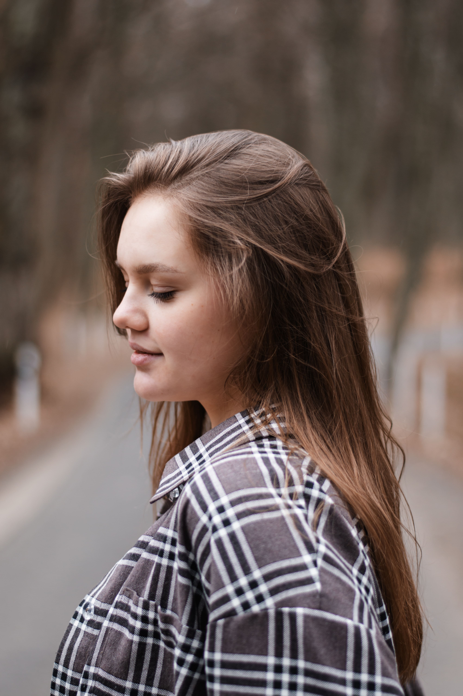

Головна
Послуги
Контакти
Запис
Послуги та ціни

Персональна зйомка — 1000 грн/год
Парна зйомка — 1200 грн/год
Сімейна зйомка — 1400 грн/год
Хрещення — 2000 грн + відео в подарунок
Дитяча зйомка — 1200 грн/год
Професійна зйомка — 900 грн/год
Святкові події — від 1000 грн
×